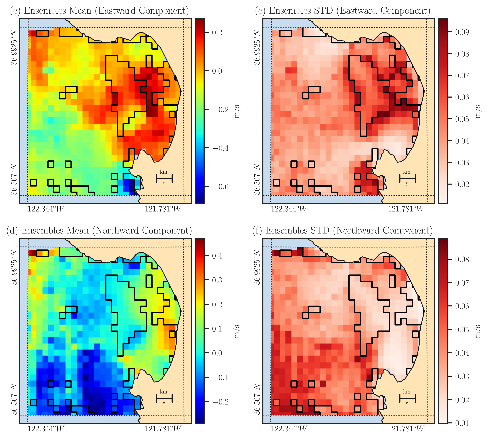

Getting Started#
Interfaces#
An installation of restoreio offers two interfaces, namely:
1. Python Interface#
You can import restoreio in Python with import restoreio. This package contains the following functions:
restoreio.restore(): This is the main function of the package which reconstructs incomplete velocity data, generates data ensemble, and performs statistical analysis. You can import this function by>>> from restoreio import restore
restoreio.scan(): This function performs a pre-scan of your NetCDF dataset and ensures your dataset is compatible as an input torestoreio.restore()function. The scan also provides you basic information about the dataset such as the time span, spatial extent of the data. These information could be useful to configure the settings forrestoreio.restore()function. You can import this function by>>> from restoreio import scan
2. Command-Line Interface#
Alternatively, you may use restoreio as a standalone application which can be executed in command line. When this package is installed, the following executables will be available on your Python path:
restore: This executable is equivalent to
restoreio.restore()function in the Python interface.restore-scan: This executable is equivalent to
restoreio.scan()function in the Python interface.
To use these executables, make sure the /bin directory of your Python installation is set on your PATH environment variable. For instance, if your Python is installed on /opt/minicinda3/, add this path /opt/miniconda3/bin directory to PATH by
export PATH=/opt/minicinda/bin:$PATH
You may place the above line in ~/.bashrc to make the above change permanently.
Quick Start#
restoreio has two main purposes:
The function restoreio.restore() serves both of the above purposes. In the followings two sections, we demonstrate simple examples on how to use this function for each of these applications.
1. Restoring Incomplete Data#
The following illustrates a minimalistic example of how to restore missing data in an HF radar dataset. This example showcases the usage of both the Python interface and the command-line interface of restoreio.
Using Python Interface#
The code below uses the restoreio.restore() function in the Python interface of restoreio:
>>> # Import package
>>> from restoreio import restore
>>> # OpenDap URL of HF radar data
>>> input = 'https://transport.me.berkeley.edu/thredds/dodsC/' + \
... 'root/MontereyBay/MontereyBay_2km_original.nc'
>>> # Specify output
>>> output = '/tmp/output.nc'
>>> # Specify a time point
>>> time_point = '2017-01-25T09:00:00'
>>> # Restore missing velocity data
>>> restore(input, output=output, time=time_point, detect_land=True,
... fill_coast=True, plot=True)
The provided code generates the following plots, allowing you to compare the input data (left column) with the output data (right column). Additionally, the outcome of the above code is saved as an output file named output.nc, which contains the reconstructed east and north components of the velocity data.
The above code processed one time point specific by time argument. You can also process a time interval within the input dataset using min_time and max_time arguments:
>>> # Import package
>>> from restoreio import restore
>>> # OpenDap URL of HF radar data
>>> input = 'https://transport.me.berkeley.edu/thredds/dodsC/' + \
... 'root/MontereyBay/MontereyBay_2km_original.nc'
>>> # Specify output
>>> output = '/tmp/output.nc'
>>> # Subsetting time
>>> min_time = '2017-01-25T03:00:00'
>>> max_time = '2017-01-25T09:00:00'
>>> # Restore missing velocity data
>>> restore(input, output=output, min_time=min_time, max_time=max_time,
... detect_land=True)
The output file includes reconstructed variables named east_vel and north_vel. The following code reads the output file and prints the variables within it:
>>> # Reading the output file
>>> import netCDF4
>>> nc = netCDF4.Dataset(output)
>>> nc.variables.keys()
dict_keys(['time', 'lon', 'lat', 'mask', 'east_vel', 'north_vel'])
For more information about the output variables, see Output Variables in this user guide.
Using Command-Line Interface#
The same code above can also be invoked using the restore executable:
# OpenDap URL of the dataset
input='https://transport.me.berkeley.edu/thredds/dodsC/'\
'root/MontereyBay/MontereyBay_2km_original.nc'
# Specify output
output='/tmp/output.nc'
# Subsetting time
min_time='2017-01-25T03:00:00'
max_time='2017-01-25T09:00:00'
# Restore missing velociy data
restore -i $input -o $output --min-time $min_time --max-time $max_time -L 2
2. Generate Data Ensemble#
The second purpose of the restoreio.restore() function is to generate ensemble of the velocity data while also restoring the missing data within each generated ensemble. Here, we provide examples of its usage in both the Python and command-line interfaces.
Using Python Interface#
>>> # Import package
>>> from restoreio import restore
>>> # OpenDap URL of HF radar data
>>> input = 'https://transport.me.berkeley.edu/thredds/dodsC/' + \
... 'root/MontereyBay/MontereyBay_2km_original.nc'
>>> # Specify output
>>> output = '/tmp/output.nc'
>>> # Subsetting spatial domain to the Monterey Bay region, California
>>> min_lon = -122.344
>>> max_lon = -121.781
>>> min_lat = 36.507
>>> max_lat = 36.992
>>> # Specify a time point
>>> time_point = '2017-01-25T09:00:00'
>>> # Generate ensemble and reconstruct gaps
>>> restore(input=input, output=output, min_lon=min_lon,
... max_lon=max_lon, min_lat=min_lat, max_lat=max_lat,
... time=time_point, uncertainty_quant=True, num_samples=2000,
... ratio_num_modes=1, kernel_width=5, scale_error=0.08,
... detect_land=True, fill_coast=True, write_samples=True)
In the code snippet above, we’ve extracted a subset of data for the Monterey Bay region in California. This code generates 2000 samples of velocity data, with more details available in the Generating Ensemble section. The figure below displays the mean and standard deviation of these ensemble in the left and right panels, respectively.
The output file includes the mean of the reconstructed ensemble labeled as east_vel and north_vel variables. Additionally, the standard deviation of the ensemble are saved as east_err and north_err variables, respectively. The ensemble members themselves are stored in the variables east_vel_ensemble and north_vel_ensemble.
>>> # Reading the output file
>>> import netCDF4
>>> nc = netCDF4.Dataset(output)
>>> nc.variables.keys()
dict_keys(['time', 'lon', 'lat', 'mask', 'east_vel', 'north_vel', 'east_err',
'north_err', 'east_vel_ensemble', 'north_vel_ensemble'])
Using Command-Line Interface#
The same code above can also be invoked using the restore executable:
# OpenDap URL of the dataset
input='https://transport.me.berkeley.edu/thredds/dodsC/'\
'root/MontereyBay/MontereyBay_2km_original.nc'
# Specify output
output='/tmp/output.nc'
# Subsetting spatial domain to the Monterey Bay region, California
min_lon=-122.344
max_lon=-121.781
min_lat=36.507
max_lat=36.992
# Specifying a time point
time_point='2017-01-25T03:00:00'
# Restore missing velociy data
restore -i $input -o $output --min-lon $min_lon --max-lon $max_lon \
--min-lat $min_lat --max-lat $max_lat --time $time_point -L 2 -l \
-u -e 2000 -m 1 -w 5 -E 0.08 -W